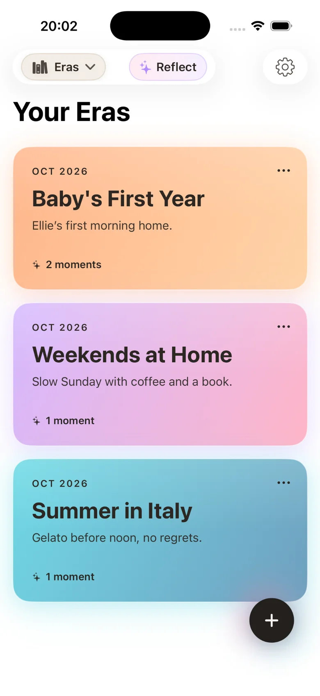
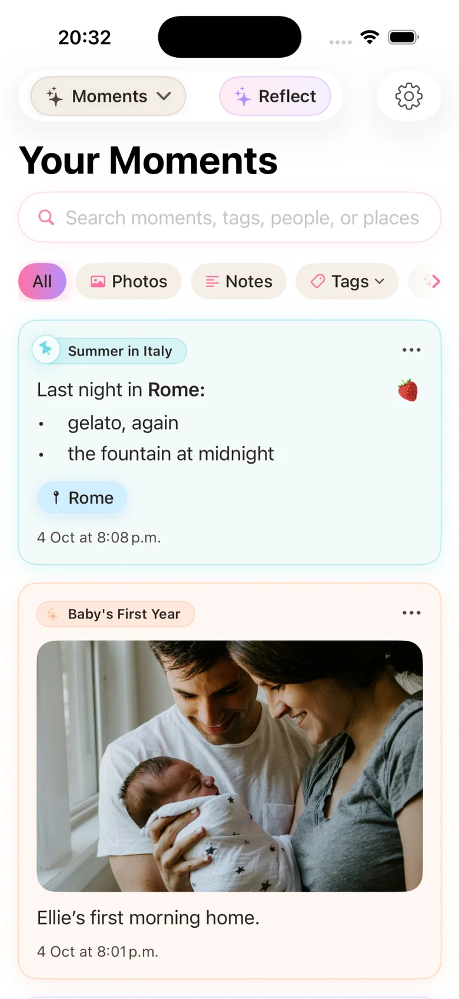
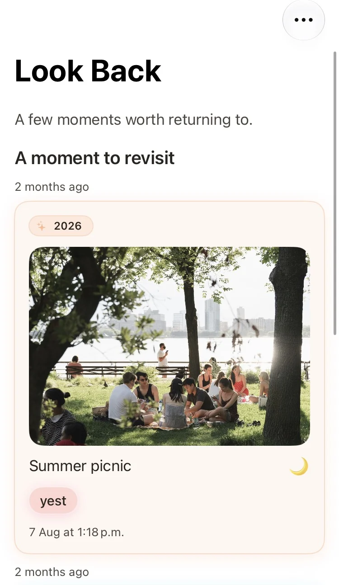

1. Eras — Chapters of Your Life
Create an Era for a chapter of your life, such as university, a new baby or a special holiday. Give it a name and colour, then keep memories from that time together.
Private Photo Journal & Diary App for iPhone
Stillkeep is a private journal and diary app for iPhone. Save favourite photos, add the stories behind them, and organise your memories into chapters called Eras. No daily streaks, no pressure.
Free photo journal for iOS · Eras, Moments & Look Back · Private iCloud sync · Sign in with Apple · iOS 17.6+

Rediscover your life chapters:
University→ Baby's First Year→ Japan 2026→ Look Back ✓You don't need to write every day to keep a meaningful journal. Stillkeep gives you a quiet place to save your photos, thoughts and memories whenever something matters to you.
Start with a journal entry. Add your photos and words, then keep everything easy to find as life moves on.

Create an Era for a chapter of your life, such as university, a new baby or a special holiday. Give it a name and colour, then keep memories from that time together.
Each Moment is a journal entry. Add photos, write what happened, and use tags to help you find it later.

Return to entries from earlier days, months or years. It's a simple way to remember the details you might otherwise forget.
Make room for the moments you want to remember.
Start your private journal on iPhone — free to download.
Stillkeep is a private iPhone journal app for saving photos, notes and everyday memories. You can write whenever you like, without a daily streak to maintain.
Stillkeep is private by design. You sign in with Apple, and its published Privacy Policy says user data is stored and processed using Apple infrastructure, including CloudKit for storage and synchronization.
Eras are the major chapters of your life (such as "University", "New Baby", or "Travelling 2026"). Moments are individual dated entries within an Era containing your photos, notes, tags, and vibes.
Look Back brings earlier journal entries back into view so you can enjoy moments from your past without having to search for them.
Yes. Entire Eras can be exported as PDFs to create digital photobooks, and individual Moments can be exported as custom photo cards containing your image and writing.
Yes, Stillkeep is free to download on iPhone (iOS 17.6 or later) with a generous free tier supporting up to 3 Eras, 20 Moments per Era, and 3 photos per Moment. Premium expansion is available for €3.99 per month for heavy journalers.
A private journal for the photos and stories worth keeping. Available for iPhone in multiple languages.